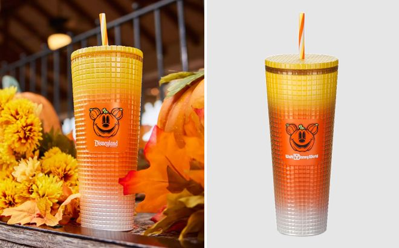
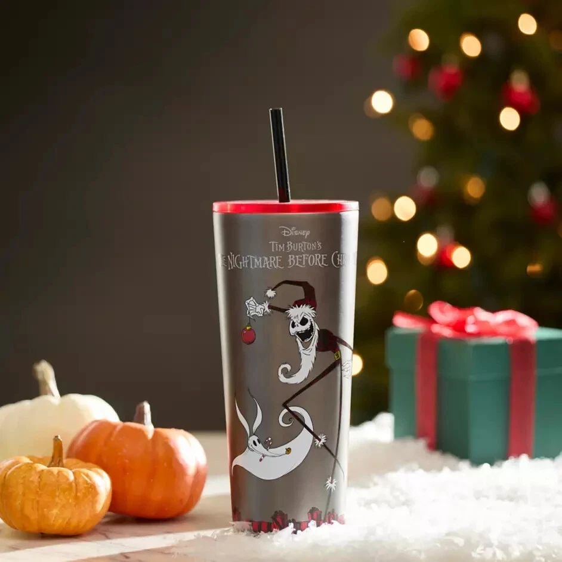
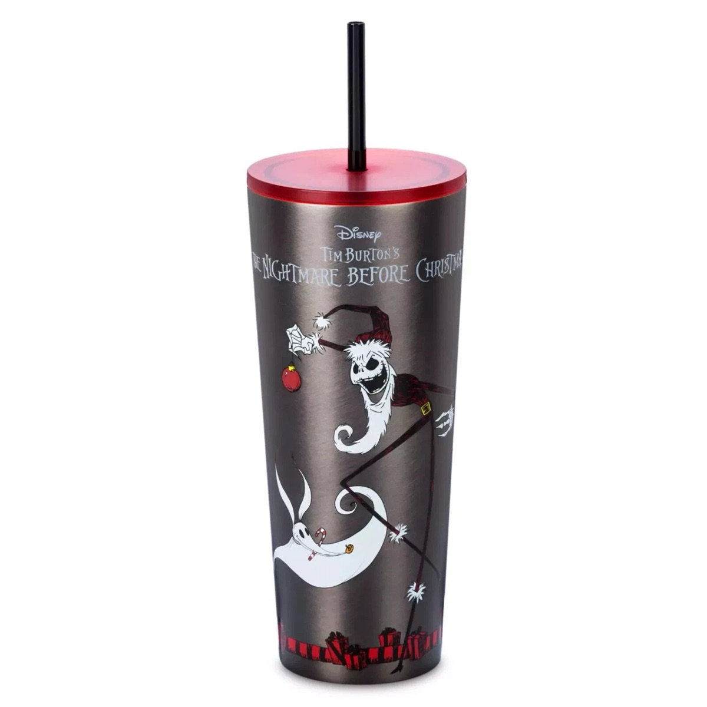
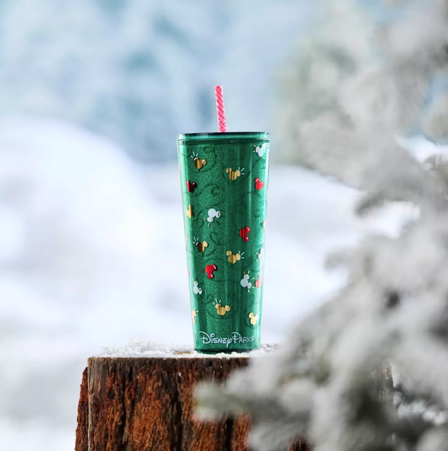
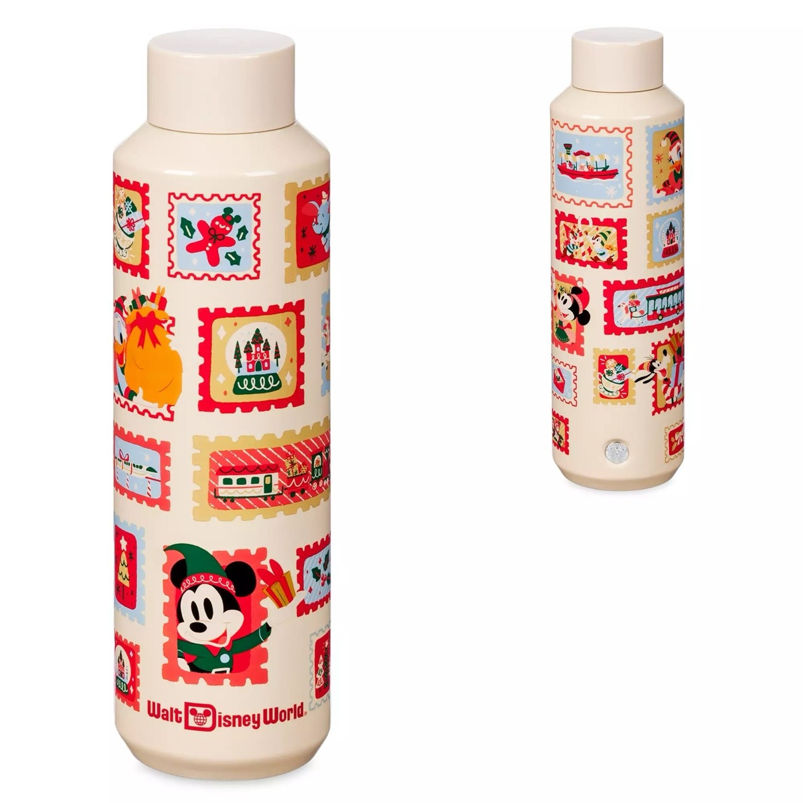
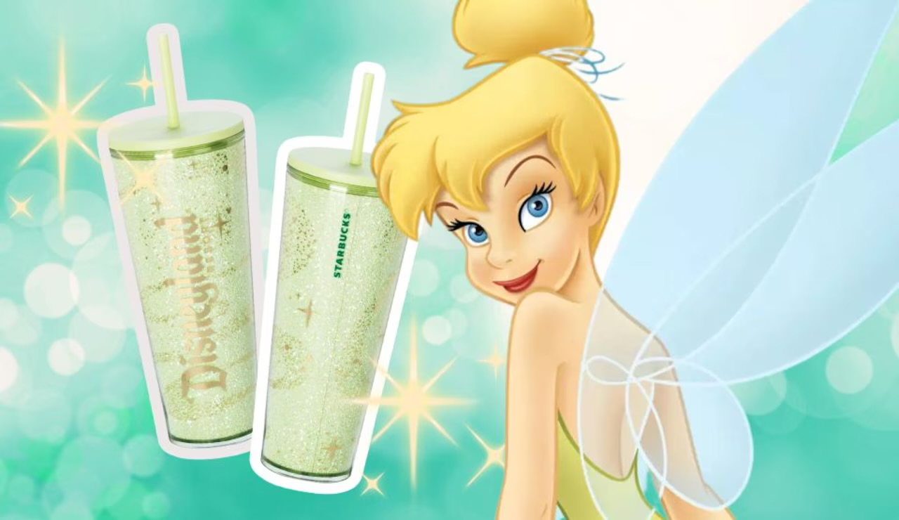
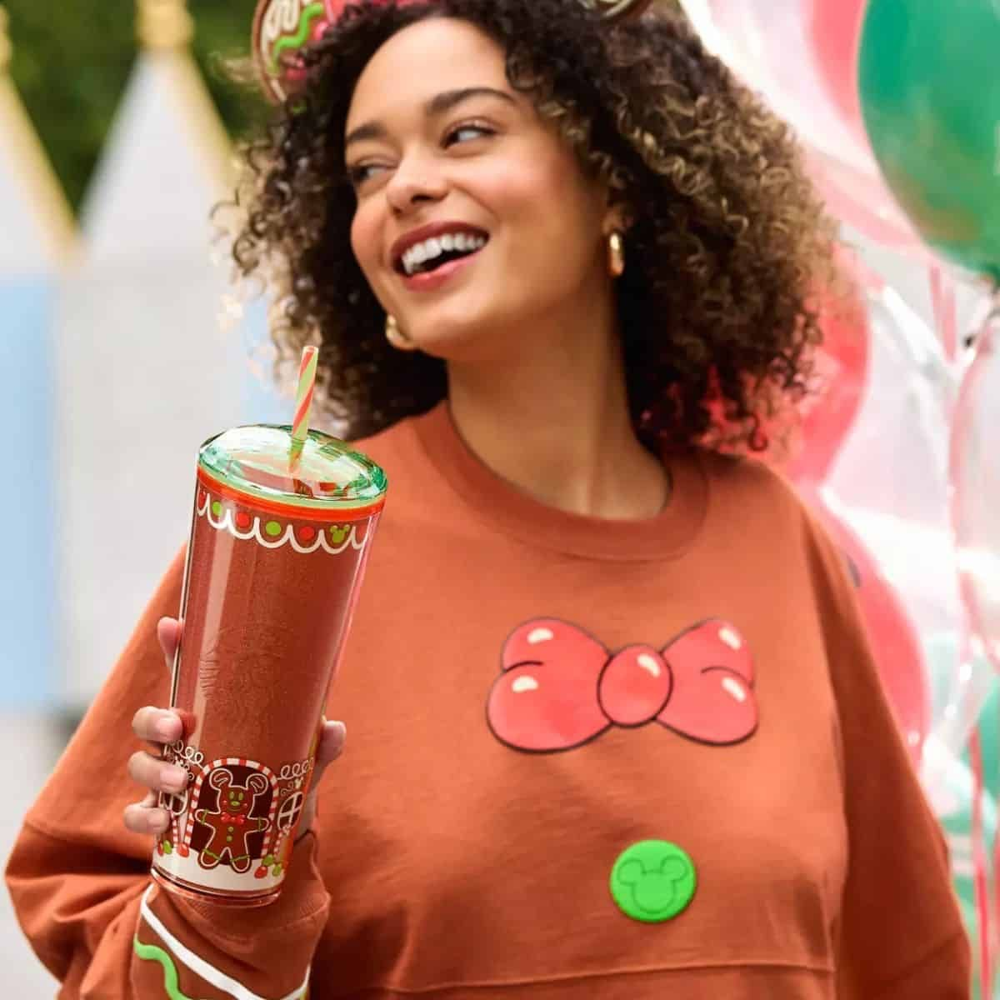

Role & Responsibilities
- Concept DevelopmentInterpreted briefs to develop creative concepts that reflect seasonal themes and regional preferences.
- Design ExecutionCreated detailed renderings and mock-ups for a variety of merchandise items, ensuring consistency across product lines.
- CollaborationWorked closely with cross-functional teams, including marketing, production, and external partners like Disney, to ensure designs met all requirements and standards.
- Production HandoffPrepared and delivered comprehensive design files and specifications for manufacturing, facilitating a smooth transition from design to production.

Each project required delivering a range of options, from budget-friendly to premium-tier designs, often under tight deadlines. This agile process allowed the client to visualize multiple directions and make quick, informed decisions.


Design Process
- 01Research & InspirationAnalyzed market trends, regional cultural elements, and seasonal motifs to inform design direction.
- 02Sketching & PrototypingDeveloped initial sketches and prototypes to explore form, color, and material options.
- 03Feedback & RefinementIncorporated feedback from stakeholders to refine designs, ensuring alignment with brand identity and market expectations.
- 04FinalizationCompleted final designs with detailed specifications, ready for production and distribution.


My role focused on developing concepts, creating original graphics, and producing 3D mockups for internal and client presentations. Working with strict Disney brand guidelines, I balanced creative freedom with precision—adapting their assets while maintaining visual consistency and storytelling across each collection.

Outcome
The merchandise collections were successfully launched across multiple regions, receiving positive feedback for their cultural relevance and design quality. Collaborations with local artists added a unique dimension to the product lines, enhancing brand appeal and customer engagement.
